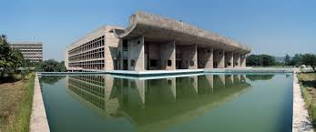

Known as "The City Beautiful," this is one of India's best-planned cities, famous for its modernist architecture designed by Le Corbusier.
Best Places to Visit in Chandigarh Slider
Rock Garden
A unique sculpture garden created entirely by artist Nek Chand from industrial waste, discarded items, and inter-city household waste, forming an artificial kingdom.
Sukhna Lake
A serene reservoir resting at the foothills of the Shivalik hills, popular for boating, jogging, and relaxation.
Zakir Hussain Rose Garden
Asia's largest rose garden, sprawling over 30 acres, featuring over 1,600 varieties of roses and several medicinal plants.
The Capitol Complex

A UNESCO World Heritage Site and the administrative centre, featuring architectural masterpieces designed by Le Corbusier, including the Secretariat, Assembly, and the High Court.
Open Hand Monument
Located in the Capitol Complex, it is the official emblem of Chandigarh, designed by Le Corbusier, symbolising the hand to give and the hand to take, signifying peace and prosperity.